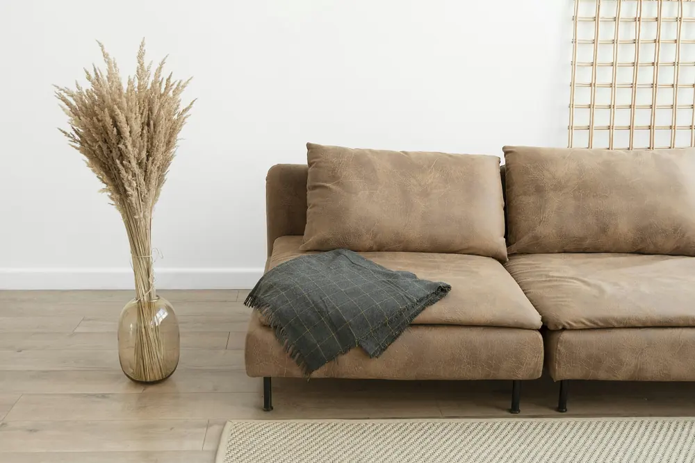
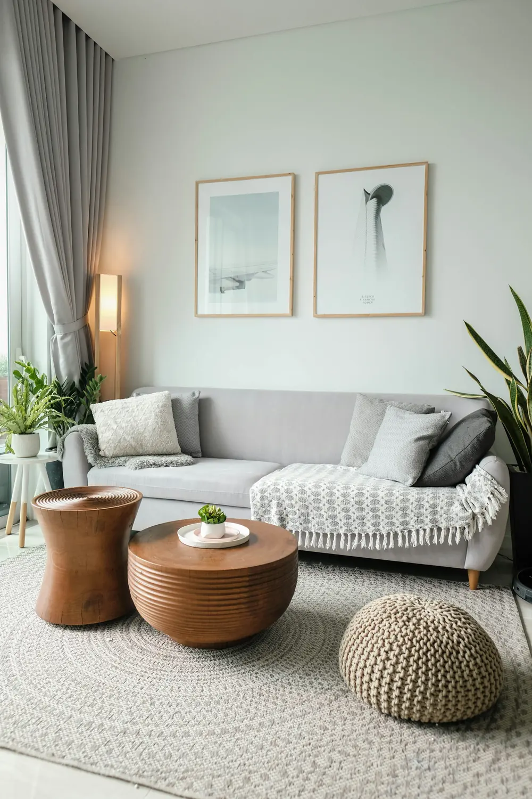

О магазине
Магазин, в котором мы покупаем сами
Обиход начался в 2019 году с одной полки в мастерской на Новослободской. Мы искали для своего дома посуду и свет, которые не стыдно передать детям, — и не находили. Теперь их делают восемь мастерских, а мы проверяем и привозим.

- 2019
- открыли шоурум и первую полку с керамикой
- 8
- мастерских в семи городах — от Гжели до Казани
- 4 200
- заказов отправили в прошлом году
- 4,9
- средняя оценка покупателей
Как мы выбираем
Четыре шага, прежде чем вещь попадёт в каталог
Находим
Ездим по ярмаркам ремесла, смотрим выпускников художественных училищ, читаем письма от мастеров. Из десяти мастерских, которые нам пишут, остаётся одна.
Едем в мастерскую
Смотрим, как устроено производство, из чего делают и сколько вещей выходит в месяц. Если мастерская не справится с заказами, мы её не возьмём — чтобы не подводить ни её, ни вас.
Тестируем дома месяц
Моем в посудомойке, роняем на плитку, стираем на сорока градусах, оставляем свечу гореть весь вечер. Если вещь не выдержала — она не продаётся.
Описываем честно
Фотографируем при дневном свете и пишем, какие у вещи особенности: где будет шов, как поменяется цвет латуни и почему вазы в наборе разные.

«Мы не начинаем продавать кружку, пока сами не помоем её в посудомойке сотню раз. Это скучно, но иначе мы не могли бы за неё отвечать».
Мастерские
С кем мы работаем
У каждой мастерской своя страница в каталоге — нажмите на карточку, чтобы увидеть все её вещи.
Вы мастер? Давайте работать вместе
Пришлите пару фотографий своих вещей и расскажите, сколько можете делать в месяц. Отвечаем всем в течение недели.